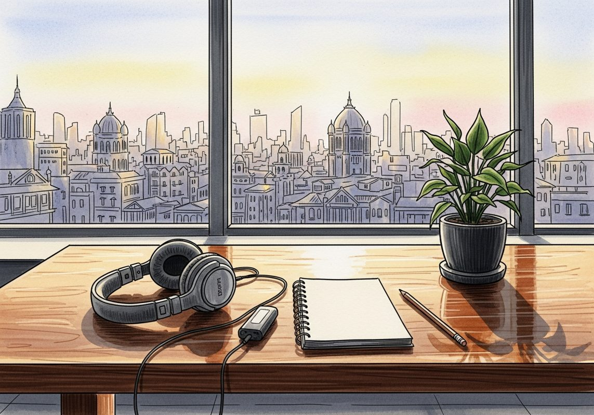

6月7日 周日

播客简报 2026-06-07
The IPO Comeback: Why Tech Giants Are Finally Going Public | All-In Liquidity IPO Panel
来源：All-In with Chamath, Jason, Sacks & Friedberg
这期播客深入探讨了科技公司IPO浪潮的回归，以及Cerebras和Planet Labs这两家前沿科技公司上市的真实经历与未来展望。它适合关注科技投资、AI发展、太空经济以及企业上市策略的中文读者，揭示了公开市场对创新和价值创造的独特作用。
- IPO回归：新一轮科技公司上市潮：播客开篇即指出，2026年有望成为IPO创纪录的一年，预示着科技公司上市潮的回归。主持人Jason Calacanis与嘉宾Andrew Feldman（Cerebras Systems创始人兼CEO）、Will Marshall（Planet Labs联合创始人兼CEO）以及Brad Gerstner（Altimeter Capital创始人兼CEO）共同探讨了这一趋势。Cerebras专注于AI芯片，Planet Labs则深耕太空数据。两位CEO分享了各自公司上市的亲身经历，揭示了从私有到公开市场转型的挑战与机遇，以及AI和太空技术如何驱动新一轮的创新和价值创造。
- 上市的真实体验：挑战与意外收获：Andrew Feldman坦言，上市过程充满了“垃圾”工作，如无数次会议和文件审查，这些对核心业务并无直接价值。上市后，公司的工程项目并未因此加速，销售额也未立即飙升。然而，上市确实为公司带来了更多资金，提升了外部认可度，并让员工及其家人感到无比自豪，尤其对于那些奋斗多年的老员工而言，这是一种重要的里程碑和外部验证。Will Marshall也表示，上市提供了早期股东和员工的流动性，为公司注入了现金，并增强了企业在客户心中的信誉，尤其对于需要长期稳定合作的大型政府和农业客户而言，上市是公司实力和持久性的证明。
- Cerebras：AI芯片的颠覆性创新：Andrew Feldman指出，AI的兴起让计算机能够处理图像和语言等此前难以攻克的难题，这为计算架构带来了巨大变革。Cerebras在2015年预见到AI对算力的巨大需求，并大胆押注专用芯片，且其架构必须与GPU截然不同。他们通过制造一块“餐盘大小”的巨型芯片，将内存紧邻计算单元放置，有效解决了AI计算中数据从内存到计算单元传输的瓶颈问题。这种独特设计使得Cerebras的芯片在某些AI任务中比GPU快18倍，极大地提升了AI响应速度和用户体验，如同高速搜索取代拨号上网，速度是AI应用成功的关键。
- Planet Labs：太空数据与地球智能：Will Marshall介绍，Planet Labs拥有全球最大的地球成像卫星群，约200颗卫星每天对地球进行成像，提供实时且历史可追溯的地球视图。这些数据广泛应用于农业、能源、政府（如洪水和火灾监测）以及安全领域，其中约60%的收入来自安全应用，帮助预警和预防冲突。太空技术成本的下降是其成功的关键：火箭发射成本在十年内下降了4-5倍，更重要的是卫星的小型化，曾经耗资数十亿美元、重达20吨的卫星，现在只需几公斤或数百公斤就能实现同等甚至更强大的功能，这如同从大型机到个人电脑的革命，极大地拓展了太空应用的边界。
- 太空数据中心：计算的未来疆域：Will Marshall展望了太空数据中心的未来。他与Google合作的研究表明，当火箭发射成本降至每公斤200-300美元时（目前约1000美元，预计2-3年内实现），在太空部署数据中心将比在地球上更经济。主要优势在于，在太阳同步轨道上，太阳能电池板可以24/7持续获取能量，其效率是地面上的五倍，且无需电池储能。这意味着太空数据中心的基础设施将主要由太阳能板、芯片和射频信号组成，大大简化。Planet Labs已与Nvidia合作发射GPU，并计划与Google合作发射TPU进行测试。Will预测，十年内大部分计算将转移到太空，形成一个万亿美元级别的市场。Andrew Feldman对此表示认同，但认为实现星际通信集群仍是巨大挑战，需要更多时间和实验。